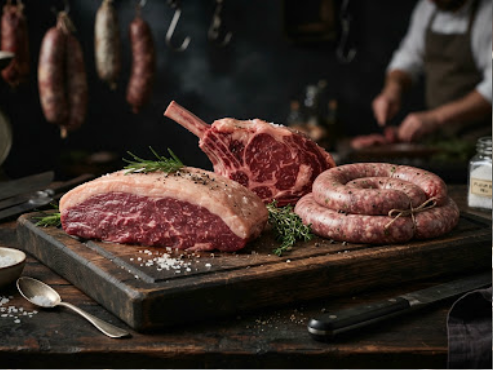

Descubra a quantidade ideal de cortes nobres por pessoa, bebidas e carvão sem desperdício e com garantia de qualidade SIF auditada. Precisão frigorífica direto na sua brasa.

Ajuste o número exato para equilibrar o consumo proteico.
Eventos longos demandam reposição contínua e mais guarnições.
Marque os grupos que deseja que façam parte do seu kit de carnes.
Como tratar carnes de alto marmoreio na grelha e garantir rendimento sem ressecar as fibras musculares.
Retire a carne da refrigeração 20 minutos antes de grelhar para que o centro térmico atinja 14°C. Após assar, aguarde 3 minutos antes de fatiar para redistribuir a mioglobina.
Prefira o sal de parrilla entrefino à flor de sal ou pedras grossas tradicionais. O sal fino dissolve perfeitamente com a gordura derretida de bovinos Angus e Wagyu sem queimar.
Mantenha 60% da churrasqueira com brasa viva (selagem rápida a 250°C) e 40% com calor indireto para finalização de cortes espessos de 4cm ou mais, como Tomahawk e T-Bone.